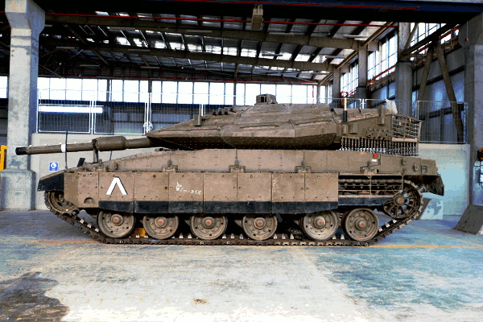

טנק המרכבה הוא טנק מערכה עיקרי המפותח ומיוצר בישראל על ידי אנשי חיל הטכנולוגיה והאחזקה בשילוב תעשיות אזרחיות.
טנק המרכבה סימן 4 הוא הדגם המתקדם ביותר של הטנק וכולל מנוע מתקדם בעל 1500 כוחות סוס ומערכת אלקטרוניות מתקדמות.
טיפול במערכות בקרה ותצפית כוללות את מערכות בקרת האש לכוונון מערכת ירי מתקדמת ומערכות תצפית משוכללות.

תפקידים במערך הנפרס
- תפעול אמצעי הבקרה והתצפית וביצוע שגרת טיפולים ברמת טכנאי.
- איתור ותיקון תקלות באמצעי האופטיקה ובקרת האש תוך שימוש בספרות ולוגיקה טכנית ותרשימי זרימה לאיתור התקלות
- הסרה והתקנה של מכלולי האופטיקה ובקרת האש כחלק משגרת הטיפולים יזומה או כחלק מתיקון תקלות.
- בדיקה ותיאום כוונות הירי וסנכרון מערכות בקרת האש לצורך הבטחת פגיעה מדויקת של המערכת.